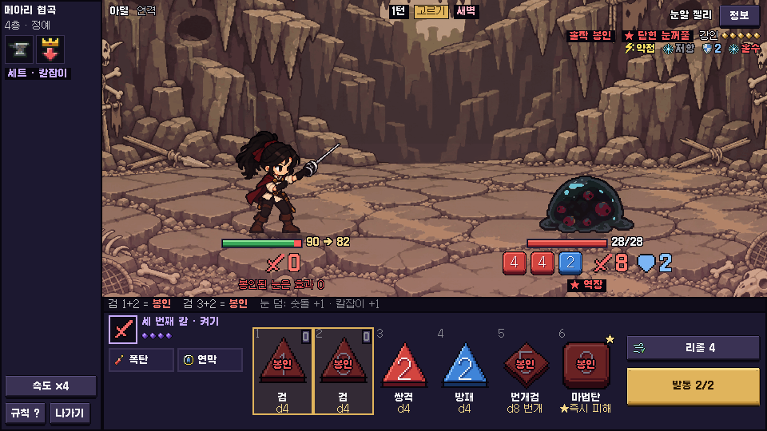

AI 목소리 입히는 영상에서, 소리 없는 게임이 가져올 것
대사 음성 시연 영상이지만, 쓸모는 「소리를 어떻게 고르고, 넣고, 검사하느냐」에 있었다. 소리가 하나도 없는 우리 게임에 옮길 일곱 가지.
읽는 데 5분
원본 영상
3일만에 8억 매출? AI 게임 한번 만들어봅시다 (Fish Audio)-RPG도트 게임호두의 AI 분석실 · 약 10분
어떤 영상인가
혼자 AI로 만든 무속풍 도트 RPG에 AI 음성을 입히는 과정을 처음부터 끝까지 보여 준다. 제목의 「8억」은 다른 게임 이야기이고 첫 10여 초에만 나온다. 본론은 음성 제작 시연이다.
- 01:03 혼자 만들 때 필요한 것을 셋으로 꼽는다 — 코드와 이야기를 같이 짜는 AI, 그림 AI, 목소리 AI.
- 03:23 같은 장면을 자막만 나오는 판과 목소리 넣은 판으로 나란히 보여 준다.
- 03:59 목소리 찾기. 검색하고, 후보를 추려, 실제 게임 대사로 들어 본다.
- 05:03 고른 뒤에도 기계 같았던 이유와, 연기 지시를 글로 적어 고친 과정.
- 07:10 게임에 붙이는 구조와 키 관리, 그리고 검수.
- 08:28 영상의 내레이션도 자기 목소리로 만든 AI 음성이었다고 밝힌다.
숫자로 보기
- 70개+ 「할머니」로 검색해 나온 목소리 수
- 6명 같은 대사를 목소리 두세 개로 뽑아 고른 인물 수
- 2 → 7곳 연기 지시 뒤 한 대사에서 쉬는 곳
- 11 → 7 반음? 같은 대사의 억양 폭
? 자동 자막에서 옮긴 값이라 확인하지 못했다는 표시. 회색 시각 단추를 누르면 영상의 그 대목이 열린다.
우리 게임에 가져올 것
우리 게임에는 지금 소리가 하나도 없다. 배경 음악도, 효과음도, 음량 옵션도 없다. 그래서 이 영상에서 가져올 것은 「음성」이 아니라 소리를 들이는 절차다.

후보를 두세 개 뽑아, 게임 안에서 들어 보고 고른다
소리는 이름표로 찾고, 만들기는 한 번만 한다
근거07:13 대사 한 줄마다 「누가 + 무슨 말」로 이름표를 만들고, 그 이름표로 음성을 한 번만 받아 게임 폴더에 넣어 둔다. 게임은 대사가 뜰 때 이름표로 파일을 찾아 튼다.
적용우리 게임의 내용물은 이미 이름표(열쇠)로 돈다. 소리도 표 한 장으로 두고, 「이런 일이 일어났다」에 소리 이름표를 대응시킨다. 게임은 실행 중에 바깥 서비스를 부르지 않고 폴더의 파일만 튼다. 그러면 출시판에는 키도 네트워크도 필요 없다.
목소리는 짧은 외침부터, 끌 수 있게
지시는 감정 낱말이 아니라 상황으로 적는다
근거05:23 대사마다 연기 지시를 글로 적는다. 「슬프게」 같은 꼬리표 대신, 어디서 무엇을 하다가 어떻게 던지는 말인지를 적었다. 05:37 그냥 읽은 것, 감정 꼬리표를 붙인 것, 연기 지시를 준 것을 차례로 들려준다.
적용외침을 뽑을 때 「화남」이 아니라 「검을 내리치는 순간, 참았던 숨을 터뜨린다. 짧게」처럼 적는다. 지시문은 버리지 않고 줄마다 같이 남겨, 다시 뽑아도 같은 결이 나오게 한다. 그림과 효과음을 AI에게 맡길 때도 같은 원칙이 통한다.
주의영상에서는 특정 모델(자막으로는 「드라마 3」?)의 기능으로 소개된다. 다른 도구에서도 같은지는 영상에 없다.
「어색하다」를 숫자로 잰다
근거06:06 기계 같다고 느낀 까닭을 두 가지 숫자로 옮겼다. 쉬는 곳의 수와 억양이 오르내리는 폭이다.
적용느낌을 숫자로 바꿔 놓으면 고친 뒤에 나아졌는지 알 수 있다. 우리는 전투 승률을 이미 숫자로 재고 있으니 소리에도 같은 습관을 들인다. 효과음이라면 길이, 가장 큰 음량, 앞쪽 무음 길이를 재서 튀는 것만 다시 듣는다.
주의영상의 숫자는 대사 하나를 한 번 잰 값이다. 「쉼이 늘면 사람 같다」를 법칙으로 쓰지는 않는다.